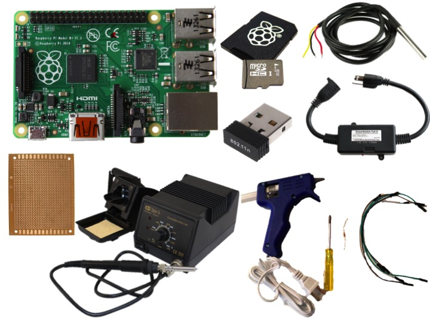
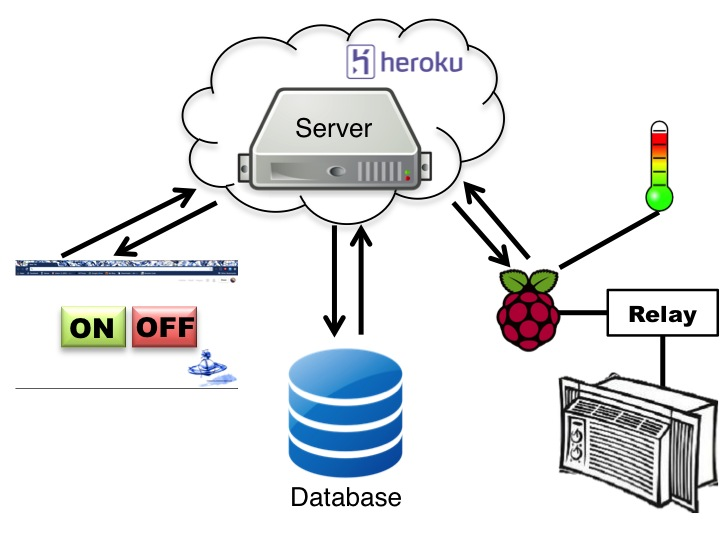
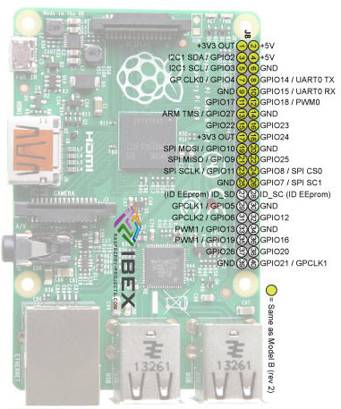
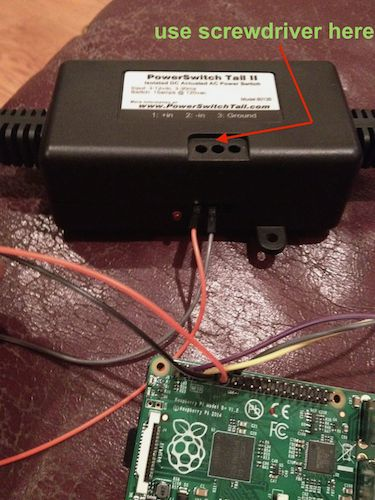
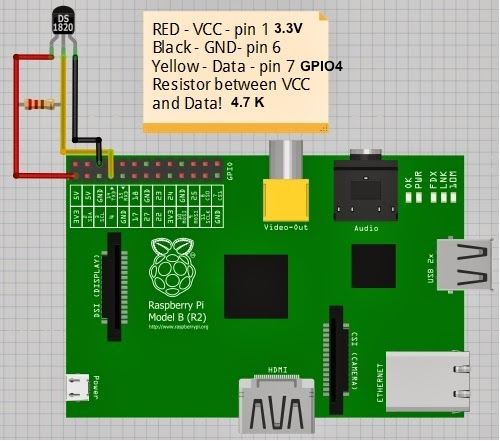
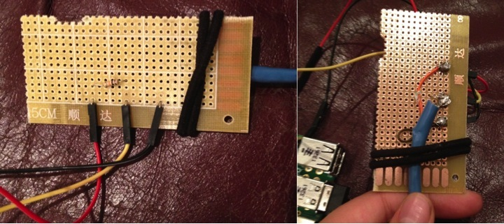
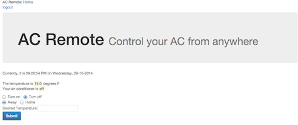

Remember that late-90s Disney Channel Original Movie Smart House in which a young, motherless, computer-genius boy wins a fully automated robot-house, only to have the house-software come alive as an overbearing 50s-esque mother who locks the boy and his family indoors ‘for their own good’?
Remember that late-90s Disney Channel Original Movie Smart House in which a young, motherless, computer-genius boy wins a fully automated robot-house, only to have the house-software come alive as an overbearing 50s-esque mother who locks the boy and his family indoors ‘for their own good’?
…maybe you don’t remember. But I do, and I have always wanted to build that. Except without the sexist/robot-takeover part (jeez Disney, what is your deal with mothers?).
Well, I didn’t quite do that. But, I did build a pretty neat device and web app for controlling my air conditioner.
Here’s a step-by-step guide to what I did.
Note, before starting this project, I’d never used a raspberry pi (I’d done just a tiny bit of Arduino), I’d never written a server, and I’d never made a web app of any kind. So, if you’re coming to this with just a bit of programming experience, take heart! This is a totally doable project.
Parts and Tools

Components of the finished project
- Raspberry Pi (I used this one)
- Power Switch (or just a relay)
- USB wifi for raspberry pi
- A micro SD card (if you are using RPi B+, otherwise check your specs)
- Digital temperature sensor
- Micro USB charger for the raspberry pi + wall adapter
- 4.7K resistor
- Jumper wires, both male and female Tip! this ebay seller is reliable and cheap
- Prototype Paper PCB (DIY circuit board)
- Your computer
Tools
- Soldering iron and solder
- A very very skinny phillips head screwdriver
- A hot glue gun
For testing/setup only
- A breadboard
- An LED
- A monitor, keyboard, and ethernet cable (for setting up the pi)
Set up the Pi
I cannot stress this strongly enough: Adafruit tutorials for allll the things! Their tutorials are super informative and easy to follow. Plus they also sell all the parts. It’s a one stop super shop for all things hardware.
If you already have a Raspberry Pi set up, or you feel comfortable getting started by going directly to Adafruit, downloading an OS image to your SD card, configuring, setting up wifi, etc, just continue with this post.
If you want some more help getting started, check out my companion blog post on getting your Raspberry Pi set up as a first-time user.
Overview

If you don’t want to read this whole post and just want to see the code I used, check out my github repo. ac_ping.py contains the code running on the Pi, while the app folder contains everthing for the server and UI, including the Procfile for deploying on Heroku. You’ll have to change the URLs, secret key, and username password, I’ve put in place-holders.
Part I: The Hardware: building your circuit
Before I get started with this section of the post, I want to thank Dana Sniezko, a fellow Hacker Schooler and hardware genius, for helping me SO much with this project. Seriously, Dana, if you’re reading this, thank you for letting me bug you with questions for weeks and for teaching me all this awesome stuff.
Raspberry Pi – PowerSwitch (relay) – Air conditioner
As you can see in the diagram, this is the only part of the entire system that interacts with the air conditioner. Instead of connecting your air conditioner’s power plug directly into the wall socket, you will plug it into the PowerSwitch Tail II, and plug the other end of that into the wall. (Make sure to check your air conditioner’s electrical specifications, because the PowerSwitch can only handle up to 15 amps. Most ACs will draw far less than that, though, mine only draws about 5).
Now the cool part. Inside the black box that is now between your air conditioner and the wall socket there is a relay, which is just an electrically controlled switch. When you send power to the switch from one of your Raspberry Pi’s GPIO (general purpose input/output) pins, the switch will close and power will flow between the wall and the AC. When no power is flowing from the Pi to the switch, the switch will be open, and no power will flow between the wall and the AC. Make sure that your AC is always set to be ‘on’, we’re bypassing the air conditioner’s normal on/off control system.
Let’s set that up. Consult the pinout map for your Raspberry Pi. I find it useful to look at one that shows a picture of the Pi, so you can make sure you’re oriented correctly.
{kind=link}

- Make sure your Raspberry Pi is not plugged into power while you are working on this.
- Choose any pin labeled GPIO except GPIO4 (which we need to reserve for our temperature sensor). For example, on the map above, pin number 11, the 6th pin down in the left column is GPIO17.
- Take one of your jumper wires (a red one would be a good choice), and connect it to that pin.
- Now connect one of the male to male jumper wires to that wire.
- Find a pin labeled ground (GND) and connect another wire (black or grey would be a good choice), and again connect that to one of the male to male wires.
- Connect the power (wire from the GPIO pin) to 1: +in on the PowerSwitch, and your ground wire to 2: -in. Ignore the spot labeled 3:Ground on the PowerSwitch.
- You’ll notice that on the face of the power switch with labels, there are some holes with screws in them. Use a small screw driver to adjust these screws such that your jumper wires are secured in the powerswitch and cannot be tugged out.
- Note: while you are testing, you don’t need the power switch at all, just plug the wires into a breadboard and use an LED. If you can turn the light on and off, you can turn your AC on and off.

RPi-GPIO library
1import RPi.GPIO as io 2import time 3 4io.setmode(io.BCM) 5switch_pin = 17 6io.setup(switch_pin, io.OUT) 7 8#blink 10 times 9for i in range(10): 10 io.output(switch_pin, False) # set output pin LOW (off) 11 time.sleep(5) # sleep for 5 seconds 12 io.output(switch_pin, True) # set out put pin HIGH (on) 13 time.sleep(5) 14io.cleanup() #reset the pins
We will adapt this blinking light for controlling the relay later on. Note, in order to use GPIO you have to run as root!
Digital Temperature sensor
Checkout this tutorial. The circuit diagram is slightly confusing so here is another I find easier to read:

For testing, set this up on the circuit board. You can send power and ground to the bus along the side.
When you set this up for real:
- Take a sheet of PCB (it doesn’t need to be large, so you can break off a piece if you want) 1.. Cut off the connecter end of the jumper wires coming from the pi and strip off the covering
- Put the wire through a hole of the pc.
- Strip down the leads from the temperature sensor.
- Solder red to red, yellow to yellow, black to black.
- Solder your resistor between red and yellow.
- Use your hot glue gun to put a blob of glue over the blobs of solder. (Not strictly necessary, but a good thing to do).
- Use something to secure the cord of the temperature sensor to your circuit board (so that you don’t end up putting a lot of strain on individual wires). I used a hairband.
Here are some pictures of my circuit, both top and bottom sides. 
The code
Continue following the adafruit tutorial from above to set up the directory for the temperature sensor for the first time.
Once you’ve done that, here is the code you will use. I copied it directly into my own program. Note: I noticed that for some reason, every time I wanted to restart my program, I had to cd into my device folder first, otherwise I’d get an error saying that the folder didn’t exist.
1import os 2import glob 3import time 4 5os.system('modprobe w1-gpio') 6os.system('modprobe w1-therm') 7 8base_dir = '/sys/bus/w1/devices/' 9device_folder = glob.glob(base_dir + '28*')[0] 10device_file = device_folder + '/w1_slave' 11 12def read_temp_raw(): 13 f = open(device_file, 'r') 14 lines = f.readlines() 15 f.close() 16 return lines 17 18def read_temp(): 19 lines = read_temp_raw() 20 while lines[0].strip()[-3:] != 'YES': 21 time.sleep(0.2) 22 lines = read_temp_raw() 23 equals_pos = lines[1].find('t=') 24 if equals_pos != -1: 25 temp_string = lines[1][equals_pos+2:] 26 temp_c = float(temp_string) / 1000.0 27 temp_f = temp_c * 9.0 / 5.0 + 32.0 28 return temp_c, temp_f
That’s it for the hardware side of this project. I’ll return to the full program I have running on the Pi in Part III.
Part II: The Server
If this is not new to you, write your server however you want, just make sure that your pi can make POST requests to some route that will add information to a database.
If this is new to you, I’ll do a quick overview of my Flask server, and you can check out the code for yourself on github. Note, this will not be a Flask tutorial. If you’ve never used Flask or written a server, I highly recommend Miguel Grinberg’s Flask Mega-Tutorial. Though it is much more information than you need for this project. I also recommend the realpython tutorial and their ‘discover flask’ video series.
The server I’ve written is intended to be used by just two clients, you, and your Raspberry Pi. It is not intended for a large scale app.
The three main routes
My server has three main routes, /index, /ac_status, and /switch_state.Here is what they do.
/Index : The Homepage
This route (which can also be accessed with the bare /), runs the homepage function which returns the homepage, index.html.
1@app.route('/', methods = ['GET','POST']) 2@app.route('/index', methods = ['GET','POST']) 3def homepage(): 4 current_log = db.get_last_ac_state() 5 room_temp = current_log[2] 6 is_running = bool(current_log[3]) 7 return render_template('index.html', room_temp = room_temp, 8 is_running = is_running, 9 time=datetime.datetime.now())
/ac_status: The route for the Raspberry Pi
This route only accepts POST requests. We will run code on the Pi to POST to this route every second with its most up-to-date state information.
The function called in this route update() will take the info from the Pi, and store it in a sqlite database (using the sqlite3 module in python). Check out db.py to see my database functions.
It will then return the information stored in a global variable called desired-state to the Pi.
1AcState = namedtuple('AcState', 2 ['timestamp','room_temp','is_running', 3 'state_num','goal_temp']) 4 5@app.route('/ac_status', methods=['POST']) 6def update(): 7 response = request.json 8 9 room_temp = response['room_temp'] 10 is_running = response['is_running'] 11 state_num = response['state_num'] #1, 2, or 3 12 #an empty string or an integer 13 goal_temp = str(response['goal_temp']) 14 print room_temp 15 print "I heard from the AC" 16 db.add_ac_state(AcState(datetime.datetime.now(), 17 room_temp,is_running, 18 state_num,goal_temp)) 19 20 global desired_state 21 return jsonify(desired_state)
I will discuss how I handle the desired-state shortly.
/switch_state: The route that the UI will hit
This route takes both GET and POST requests, and it calls the function, switch_state.
First, it gets the latest information from the database. If the request is just a GET, the function will simply return the latest information from the database to the browser. If it’s a POST request, however, we’ll first call another function statify, to translate what the user has asked for on the browser end, into something easy to convey to the air conditioner, and we’ll update the global desired_state variable.
1@app.route('/switch_state', methods=['GET','POST']) 2def switch_state(): 3 current_log = db.get_last_ac_state() 4 current_state = (current_log[4], current_log[5]) 5 6 #if we have a post request, do this stuff, 7 #otherwise just populate the page 8 #with the latest database state 9 if request.method == 'POST': 10 print request.json 11 global desired_state 12 desired_state = statify(request.json) 13 desired_state_tup = (desired_state['state_num'], 14 desired_state['goal_temp']) 15 current_log = db.get_last_ac_state() 16 current_state = (current_log[4], current_log[5]) 17 18 #need to return stuff that the browser will then use 19 return jsonify(is_running = current_log[3], 20 state_num=current_state[0], 21 goal_temp=current_state[1])
Representing the state of the AC: desired_state and statify
In order to make the program on the Pi as simple as possible, I’ve decided to represent what I want the air conditioner to be doing in three different states. 1: Completely and totally OFF. 2: Completely and totally ON. 3: Trying to maintain a particular temperature
Because state 3 requires a temperature, I’ve represented all the states as a dictionary of {state number:?, temperature:?}, where the temperature is the empty string if we have state 1 or 2, or an integer (converted to a string) in fahrenheit for state 3.
1#initialize desired_state to a dictionary 2#representing the off state 3desired_state={'state_num':1,'goal_temp':''} 4 5def statify(ui_state): 6 #takes in inputs from the browser and returns 7 #an allowable state to give the AC as a dictionary. 8 allowed_states = {'OFF':{'state_num':1,'goal_temp':''}, 9 'ON':{'state_num':2,'goal_temp':''}, 10 'MANAGE_TEMP':{'state_num':3, 11 'goal_temp':str(ui_state['desired_temp'])}} 12 cleaned_state = {} 13 if ui_state['desired_power_state'] == False: 14 cleaned_state=allowed_states['OFF'] 15 elif ui_state['desired_mode_is_home']: 16 cleaned_state=allowed_states['MANAGE_TEMP'] 17 else: 18 cleaned_state=allowed_states['ON'] 19 return cleaned_state
Login and logout routes
I’ve added login and logout routes to my final server program. I’m not going to explain how to do that here, but you can look at my code, or go to this realpython tutorial. I recommend watching the video. Make sure to add the @login_required decorator to the appropriate functions.
HTML/User interface
You’ll need some pages for these routes to return. To start out, I recommend just using some plain HTML, and later, you can add onto it with some javascript and CSS to make the UI better. I’m using some jQuery and CSS Bootstrap. My HTML templates are here, js is here.
UI design was decidedly not the focus of this project, and I’d love suggestions for making it better:

Part III: The Raspberry Pi program
Now that we have our server, we can flesh out the code that’s going to run on the pi.
So far, we have some functions that allow us to read from the temperature sensor (I’ve added one that just returns the temperature in fahrenheit), and we’ve imported the RPi-GPIO library and set up our switch pin. I’ve also added a function to read off the value of the switch pin, so we know whether power is flowing to our AC or not.
1import RPi.GPIO as io 2import time 3import os 4import glob 5 6#setup for GPIO 7io.setmode(io.BCM) 8switch_pin = 17 9io.setup(switch_pin, io.OUT) 10io.output(switch_pin, False) 11 12#setup for the temperature sensor 13os.system('modprobe w1-gpio') 14os.system('modprobe w1-therm') 15 16base_dir = '/sys/bus/w1/devices/' 17device_folder = glob.glob(base_dir + '28*') 18device_file = device_folder[0] + '/w1_slave' 19 20#functions to read from temp sensor 21def read_temp_raw(): 22 f = open(device_file, 'r') 23 lines = f.readlines() 24 f.close() 25 return lines 26 27def read_temp(): 28 lines = read_temp_raw() 29 while lines[0].strip()[-3:] != 'YES': 30 time.sleep(0.2) 31 lines = read_temp_raw() 32 equals_pos = lines[1].find('t=') 33 if equals_pos != -1: 34 temp_string = lines[1][equals_pos+2:] 35 temp_c = float(temp_string) / 1000.0 36 temp_f = temp_c * 9.0 / 5.0 + 32.0 37 return temp_c, temp_f 38 39def current_temperature(): 40 temperature = read_temp()[1] 41 return int(temperature) 42 43#Check the whether switch_pin is HIGH or LOW 44def is_running(): 45 return io.input(switch_pin)
Now, we’ll just add two more main functions to this program. One to make POST requests to the server, and one to set the state of the air conditioner.
POST requests to the server
This is the ‘hey, server!’ function. In the main loop of our program, we’ll call it every second. The Raspberry pi will POST its current state to the server, and the server will respond with the desired state from the user. We can then pass this information off to a different function that will decide what to do with the information.
First, install and import the python Requests library.
Now we’ll define the parameters for the post request to use. The url should be either the IP address of your computer, if you are testing on localhost, or the address of your site, wherever you are hosting it, followed by the name of the route to hit (ac_status).
The headers I’ve set allow requests to send data as json.
We also need to decide what data to send to the server. Looking back at the code for our server, we need to send the current temperature in the room and whether the air conditioner is on or off (We can get these values from the functions we just wrote). We also need to send the state number and goal temperature that together represent the air conditioner’s current state. Note: I have a separate value for on or off so I can always know whether the air conditioner is on or off, even when the AC is acting as a thermostat.
In order to keep track of the state of the air conditioner, I’m going to initialize a variable in the main loop of the program called state.
1import requests 2 3def send_current_state(): 4 5 data_to_be_sent = { 6 "is_running": is_running(), 7 "room_temp": current_temperature(), 8 "state_num": state['state_num'], 9 "goal_temp": state['goal_temp'] 10 } 11 12 url = "your.url.here/ac_status" 13 headers = {'Content-type': 'application/json', 14 'Accept': 'text/plain'} 15 r = requests.post(url, 16 data=some data, 17 headers=some header, 18 timeout=5) 19 20if __name__ == "__main__": 21 state={'state_num':1,'goal_temp':''} 22 while 1: 23 time.sleep(1) 24 send_current_state()
The last thing this function needs to do is get the server’s response and send off the user’s desired state to another function. We’ve called the request object r, and when the POST request is made successfully, r.json() will give you the server’s response as json.
1import requests 2 3def send_current_state(): 4 5 data_to_be_sent = { 6 "is_running": is_running(), 7 "room_temp": current_temperature(), 8 "state_num": state['state_num'], 9 "goal_temp": state['goal_temp'] 10 } 11 12 url = "your.url.here/ac_status" 13 headers = {'Content-type': 'application/json', 14 'Accept': 'text/plain'} 15 r = requests.post(url, 16 data=some data, 17 headers=some header, 18 timeout=5) 19 state_num = r.json()['state_num'] 20 goal_temp = r.json()['goal_temp'] 21 22 #The function we have to write next 23 set_state(state_num,goal_temp) 24
Setting the air conditioner’s state
We’ll define a function, set_state that will take two arguments, a state number (1, 2, or 3) and a goal temperature, which, as we defined in our server code will be the empty string if the state number is 1 or 2.
State 1 means the air conditioner should be off no matter what, and State 2 means the AC should be on no matter what, so these conditions are quite simple. We’ll either set the switch pin HIGH or LOW.
State 3 is slightly more complicated. The air conditioner should compare the temperature requested by the user to the room temperature, turn or stay on if the room is too hot, and turn or stay off if the room is at the right temperature or too cold.
In an effort to save energy and keep the air conditioner from turning on and off in rapid succession right on the edge of the goal temperature, I set a temperature range. The lower-bound is the goal temperature and the upper-bound is two degrees warmer. (Using it in my own room, I found this to be a reasonable and comfortable range). Of course, the air conditioner still vacillates rapidly around the borders of this range, an issue I have yet to fix. A better way to handle this might be to disallow changes for a certain amount of time after the air conditioner has turned on or off. I would love suggestions! I’ve made it an open issue on the github repo.
1 else: 2 # don't get warmer than 2 degrees above goal 3 goal_temp_range_max = int(goal_temp) + 2 4 if room_temp > goal_temp_range_max: 5 # if we're hotter than the max, turn on 6 io.output(switch_pin, True) 7 elif room_temp <= goal_temp: 8 # if we're at or under the temp range, turn off 9 io.output(switch_pin, False) 10 #otherwise do nothing
Cleanup and error handling
My final program has a little bit more code in it to handle problems. The goal of this code is to a) keep the program alive even if the server doesn’t respond, and b) make sure to turn the air conditioner off if something goes seriously wrong or the program is going to exit.
My strategy for waiting out periods of server unresponsiveness is:
- Keep track of the time of the last successful communication
- If the server doesn’t respond and it’s been less than five minutes since the last successful request, just keep trying.
- If it’s been more than five minutes, turn the AC off and keep trying.
1def signal_handler(signal, frame): 2 cleanup() 3 4def cleanup(): 5 io.cleanup() 6 sys.exit(0) 7 8if __name__ == "__main__": 9 state={'state_num':1,'goal_temp':''} 10 last_connect = None 11 try: 12 while True: 13 time.sleep(1) 14 try: 15 pre_connect = datetime.now() 16 send_current_state() 17 last_connect = datetime.now() 18 except IOError as e: 19 print e 20 t_delt = timedelta(minutes=5) 21 if last_connect: 22 if datetime.now()>(last_connect+t_delt): 23 io.output(switch_pin,False) 24 else: 25 if datetime.now()>(pre_connect+t_delt): 26 io.output(switch_pin,False) 27 except Exception as e: 28 print e 29 finally: 30 cleanup()
Final notes
Host your server somewhere or deploy it to Heroku
I followed these instructions to deploy my server to Heroku. You will need a Procfile. Mine is in the repo in the app directory, and it’s just one line:
web: gunicorn app:app --log-file=-
Keep your Pi program running without an ssh session
Once your server is deployed, make sure you put in the correct URL into the program that will run on the Raspberry Pi.
In order to keep a process running on the Pi even after you’ve closed your ssh session, just put nohup in front of the command you would normally run. Also, keep in mind that the GPIO library requires root privileges!
nohup sudo python ac_ping.py
Now you have your own Smart AC!
Go make cool stuff!